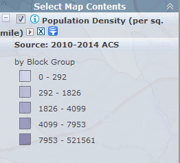
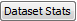
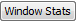
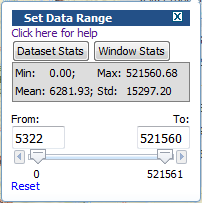
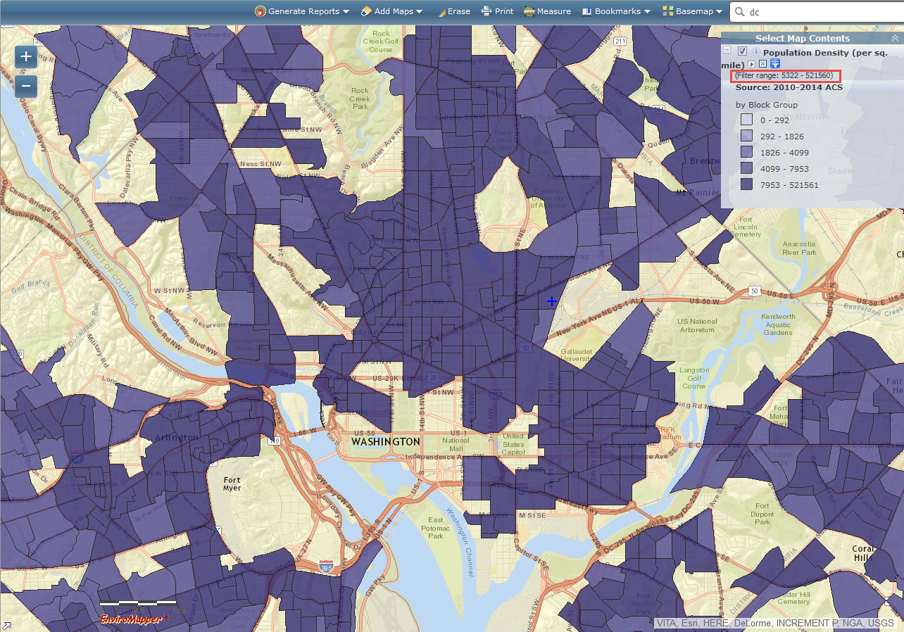

Mapping the census data with a user-specified data range
- Demographics layers can be filtered for a threshold that you specify. After a Census layer is added to the map, its legend will show up under Map Contents. Click on to specify a data range.

-
Two sets of the statistics are available to assist with specifying cutoffs. Click on  to obtain the statistics; including minimum, maximum, mean, and standard deviation, for the entire layer. Click on  to obtain the statistics for the current map window. The corresponding statistics of minimum, maximum, mean, and standard deviation are computed for those features shown in the current map window. If zooming in or out, click the button to obtain the updated stats.

- The default range for the slider is set with the minimum and maximum values from the dataset statistics. To change the default values, move the slider or enter a new value in either the From or To text box. For example, to map those features that have a value greater than the mean value of 5322, move the left slider-knob to 5322 or enter the mean value in From text box. The map will refresh immediately after a new value is set, and the updated data range is shown in the legend as highlighted in red.

-
Demographics layers are scale dependent. When the map is zoomed in/out, the mapping layer will switch between block group, tract, and county. If a cutoff is set at block group level and the map is zoomed out to tract level the cutoff will not be applied for the tract level. A cutoff will need to be set for the tract level if needed.
-
To clear the data range, simply click on Reset. Then the map will refresh.